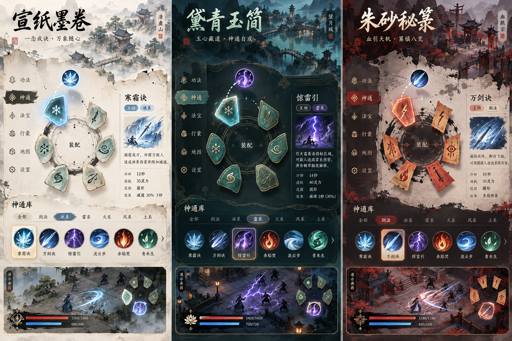
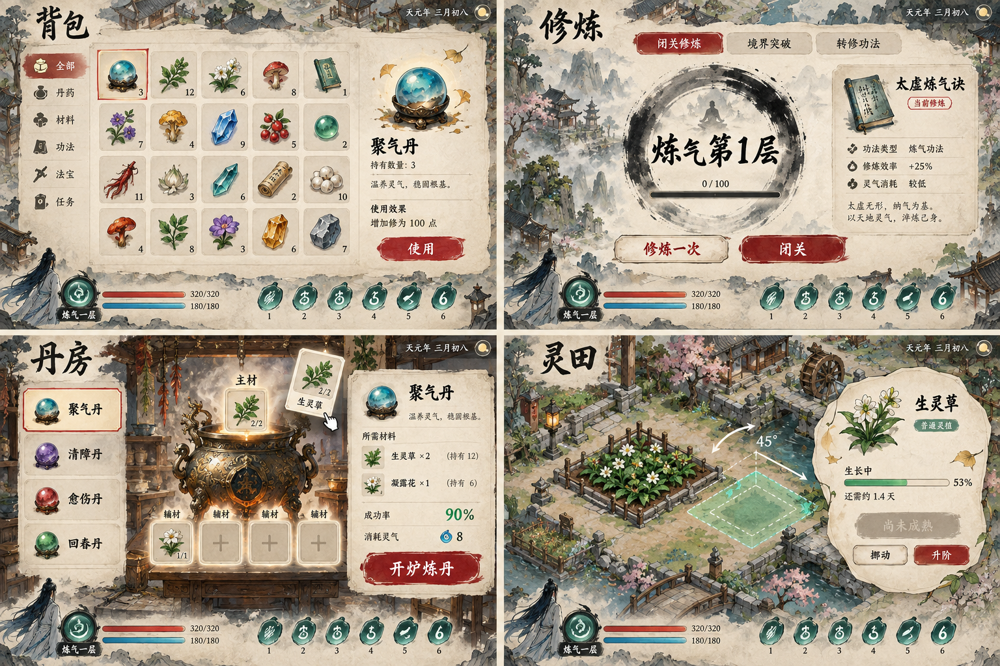
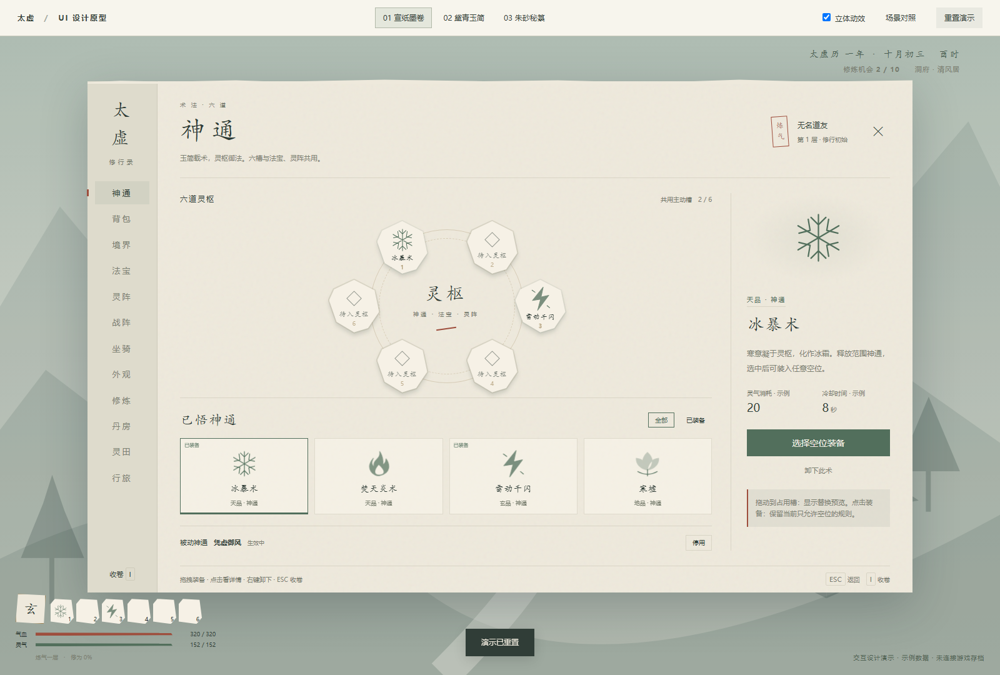
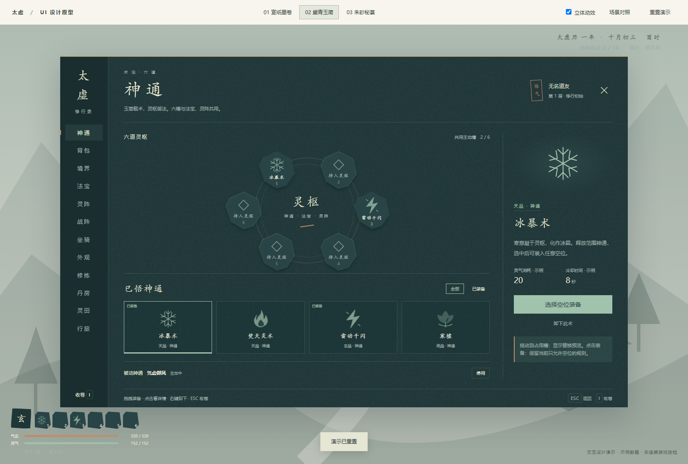
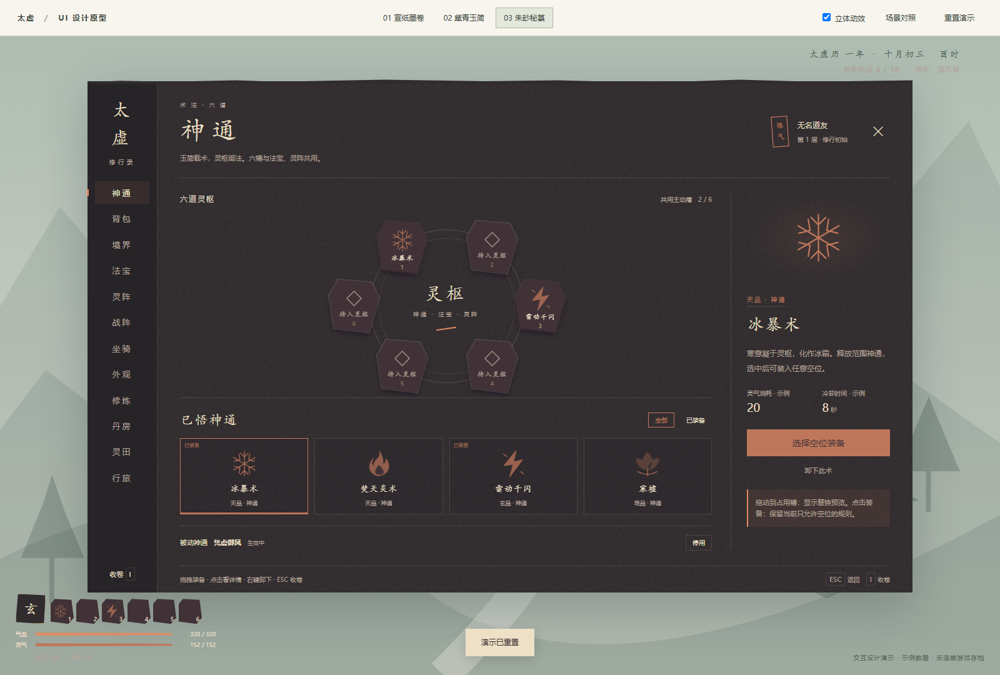
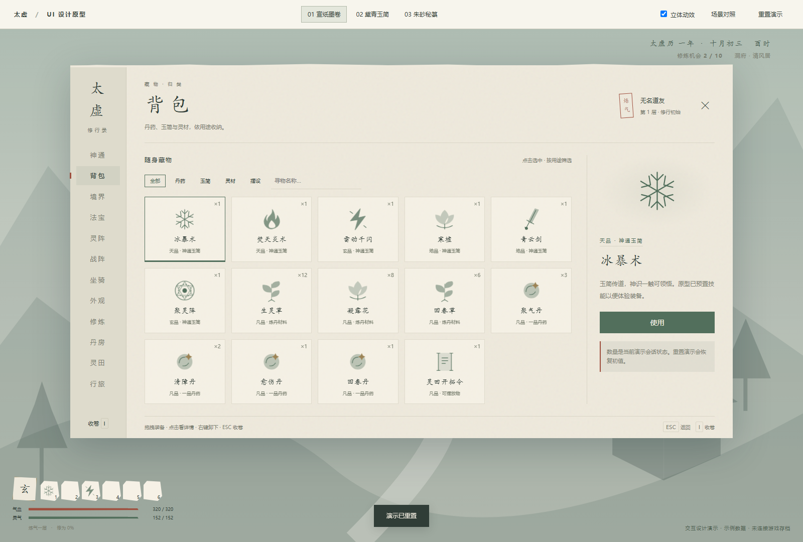
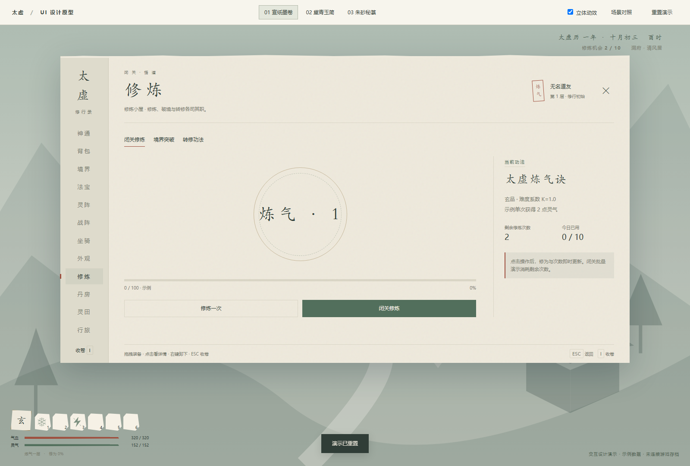
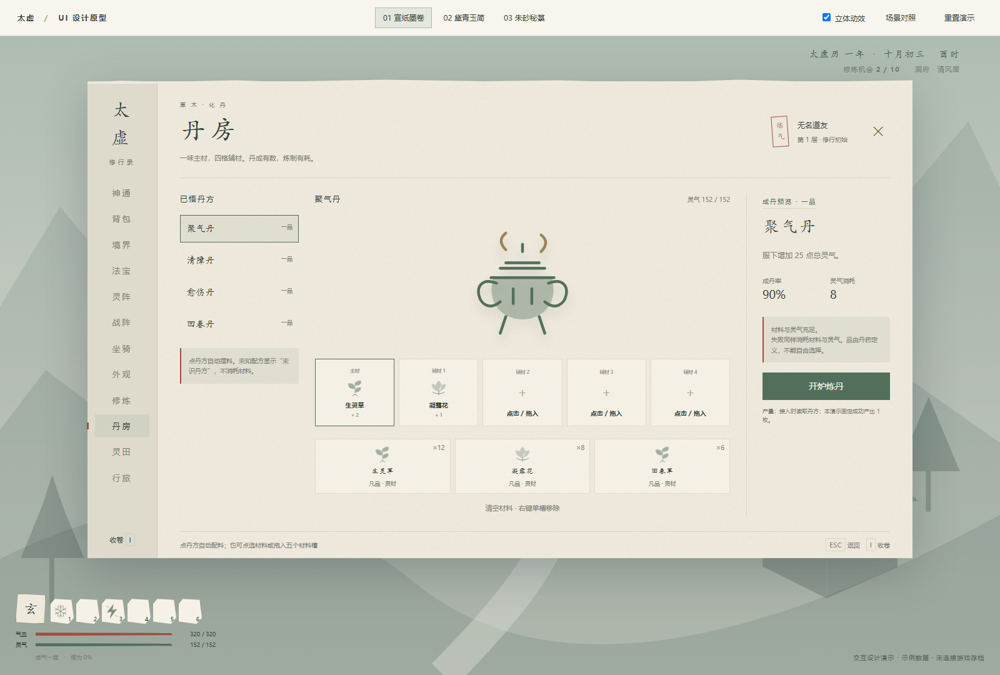
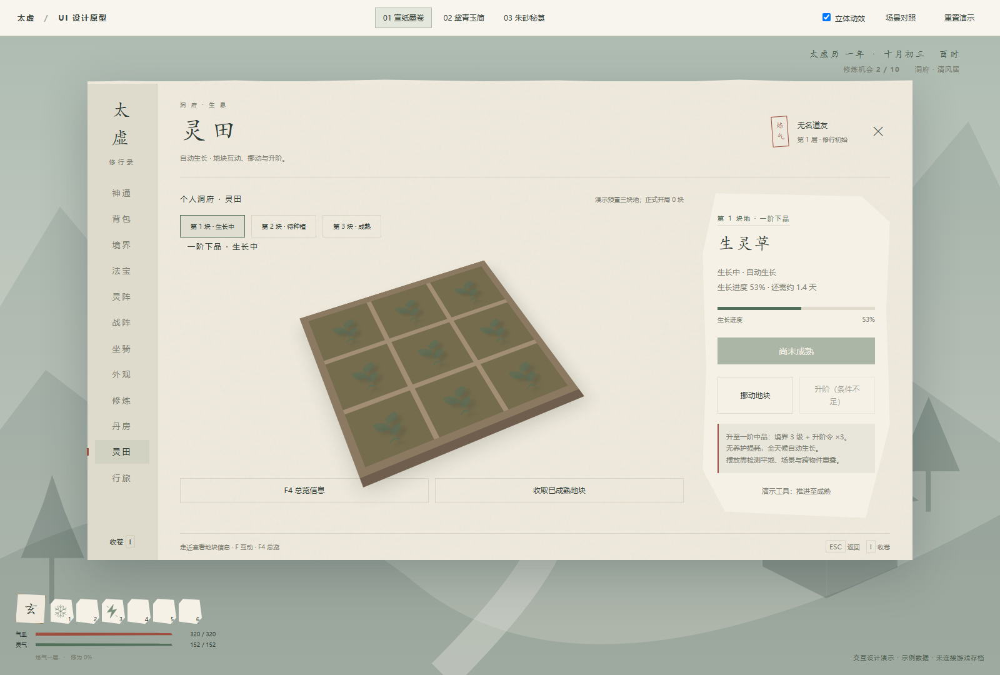
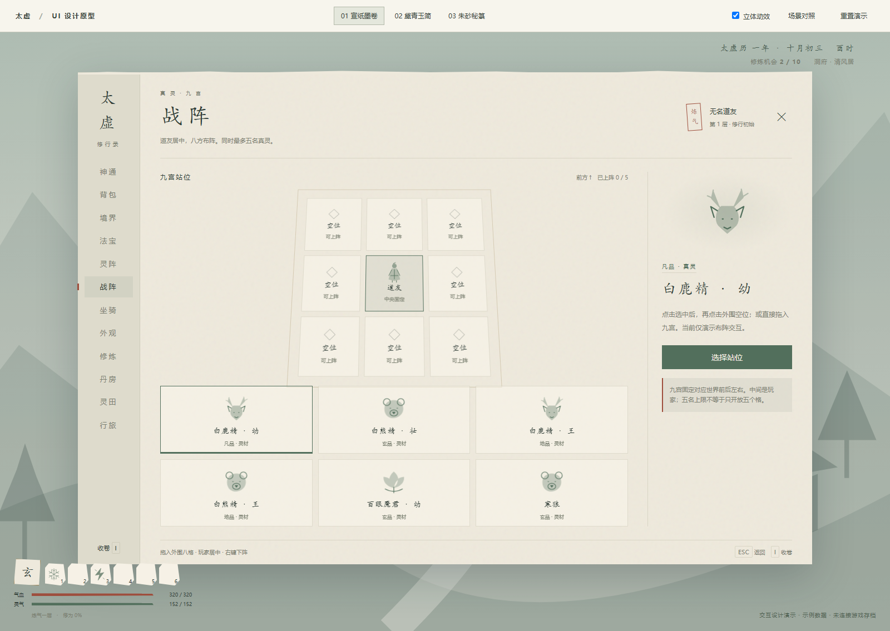

太虚 · UI 重构图册
三套视觉语言，同一套修行系统。概念图用于选风格，实际截图用于查看布局，交互原型用于体验动作。
三套风格
宣纸墨卷 ／ 黛青玉简 ／ 朱砂秘箓。图中自动生成的名字、数值和内容仅为美术占位。

养成系统的统一设计
背包、修炼、丹房与灵田；布局遵循现有机制，概念图中的细小文字以项目定义为准。

实际交互原型截图
以下为本地浏览器实际渲染；素材是可编辑的 SVG 与 CSS，尚未替换 Unity 面板。















